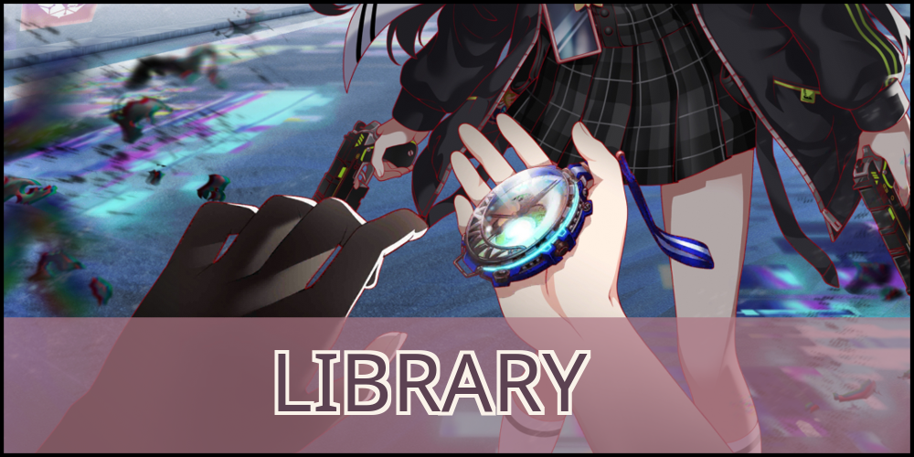
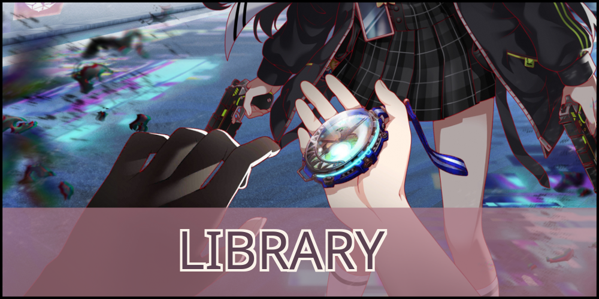

Thank you for logging in to The Metaverse of ALICE.
ALICE is an 'other life' service that provides each user with a personalized Avatar.
This Avatar is created with your registered data and can assist in lifestyle improvements in the real world.
This is a space for both business and pleasure, where unique experiences await you to find them.
We hope you enjoy your life beyond life.
ALICE Fiction was a game produced by WonderPlanet. The game takes place in a virtual
world known as ALICE, where many avatars interact with others as well as with folklores, amalgamations of data about certain historical and
mythological figures that coalesced into a new form within ALICE and gained sentience. Most of ALICE is governed by the Queen, a highly
sophisticated security AI with self learning capabilities.
The game was shut down on September 30th, 2024, across all servers.
On August 30th, 2023, the game entered maintenance mode. Only repeating events and banners made up the content around this time.
End of Service was announced on July 30th, 2024 in-game and on various social media. Along with the announcement, sales of purchasable items (packs, Quartz) ended. On September 30th, 2024, all servers for the game were shut down. On November 30th, 2024, refunding of unused paid Quartz ended.
The announcement in game was as follows:
"Thank you for enjoying Alice Fiction! It is with great difficulty the Alice Fiction Team has made the decision to end service. We are so deeply grateful for this supportive and bright community that has fueled the lifespan of Alice Fiction, and it is with heavy hearts that we come to all of you with the decision to end service.
Please refer to the notice '[Important] End of Service Announcement' in the 'Info & Bugs' for a detailed schedule, including refunds.
We hope that in the brief amount of time before the end of service you will continue to enjoy all we have created together in this wonderful year of Alice Fiction's lifespan.
-From the Alice Fiction Team."